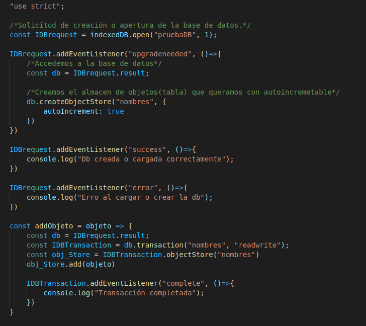
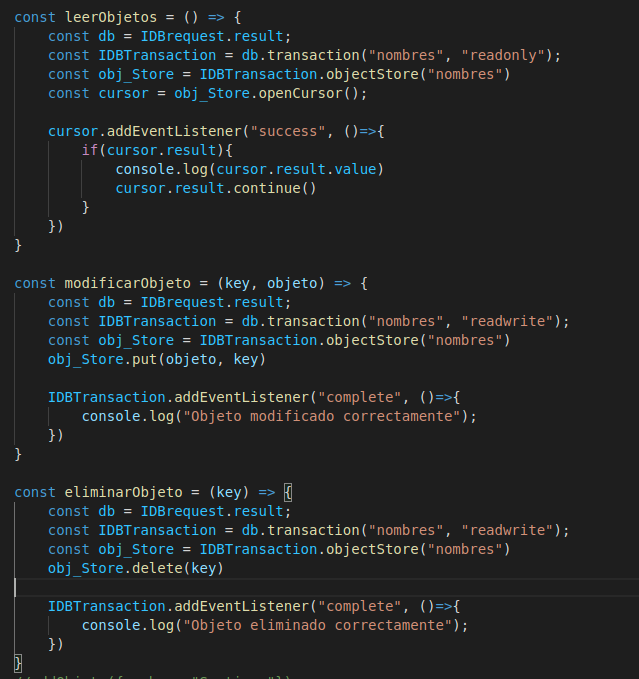

Lección 14 - IndexedDB
Definición: Es una base de datos idexada que almacena información en el navegador de forma similar al localstorage
Caracteristicas:
- Es una base de datos NoSQL o no relacional.
- Es orientada a objetos
- Es asincrona
- Trabaja con eventos del DOM
Metodos
-
open("Nombre", version) Abre una base de datos, si existe la abrimos, si no, la crea. En el segundo parametro colocamos la version de la db, que puede
ser 1.
Eventos:
- upgradeneeded: Evento que se activa cuando la db no esta creada, en este evento es donde debemos crear las tablas de la db.
- success: Evento que nos devuelve que la creación o apertura de la db fue con exito
- success: Evento que se activa cuando hubo un error en la creación o apertura de la db
-
createObjectStore() Crea una almacen de objetos(tabla) dentro de la base de datos.
-
transaction("tabla", "modo") Habilita cualquier operación que se quiera realizar con la db, agregar, actualizar, consultar o eliminar datos. Recibe dos parametros
el primero corresponde al nombre del almacen de objetos(tabla) en la que queremos realizar la operación, el segundo parametro corresponde al modo: "readwrite": leer y escribir
o "readonly" solamente se puede leer.
Metodos:
-
obj_transaction.objectStore("nombre de tabla") Luego de lo anterior es necesario especificar el almacen de objetos en el que vamos a realizar operaciones,
para eso, del objeto de transaction creado accedemos a objectStore() y pasamos el nombre del almacen de objetos(tabla)
-
obj_transaction.openCursor() Devuelve un cursor iterable sobre los datos de la db
Metodos
- result.continue() Pasa a la siguiente iteración del cursor
Eventos:
- success Evento que se activa si el cursor se creo o es correcto.
-
obj_transaction.put(objeto, key) Es un metodo para modificar un objeto de la db, cabe destacar que si no existe lo crea. Recibe dos parametros:
el primero corresponde al objeto con sus actualizaciones y el segundo parametro es la key del objeto que queremos modificar
-
obj_transaction.delete(key) Es un metodo para eliminar un objeto de la db. Recibe un unico parametro que corresponde a la key de objeto que queremos
eliminar.
Eventos:
- complete: Evento que se activa cuando la transacción se a completado, sea creación, modificación, obtencion o eliminación de un dato en la db
Codigo

